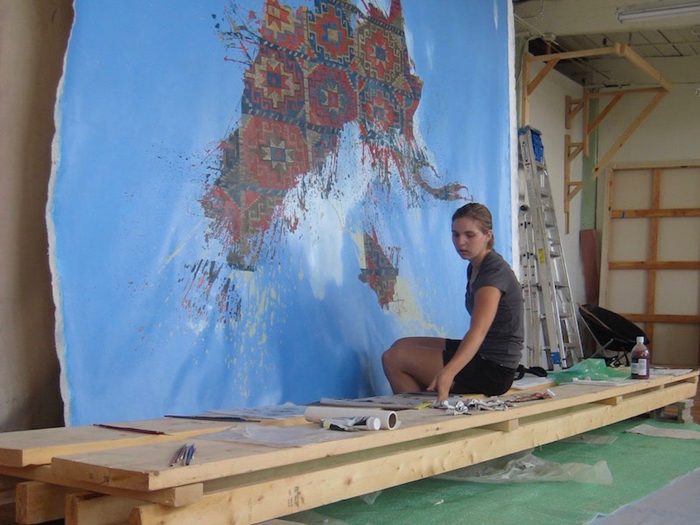

Accidental Memling Gul
Lead artist: Daniela Rivera
Working as a studio assistant to Daniela Rivera, I painted assigned portions of Rivera's Accidental Memling Gul and built wooden infrastructure (like this 15 ft. painter’s bench) for the 360 sq. ft. painting in progress. The painting was shown at the 2010 Foster Prize Exhibition at Boston’s Institute of Contemporary Art.